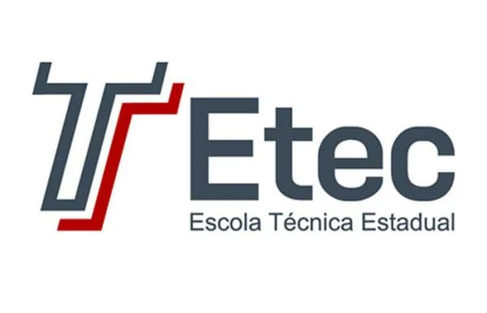

Tudo começou de forma bem simples: como um projeto desenvolvido para a ETEC. O que era para ser apenas um exercício prático aplicando as primeiras linhas de HTML e CSS logo tomou outra proporção.

A vontade de estruturar uma ideia real e o forte foco no empreendedorismo transformaram aquele trabalho acadêmico em um portal funcional. O objetivo passou a ser simplificar a busca por viagens, organizando as melhores informações sem complicação.
Ainda mantemos o espírito curioso de quem está sempre aprendendo, buscando evoluir do ambiente escolar para o mercado real, e melhorando a plataforma a cada linha de código escrita.
[ ← Voltar para o Início ]